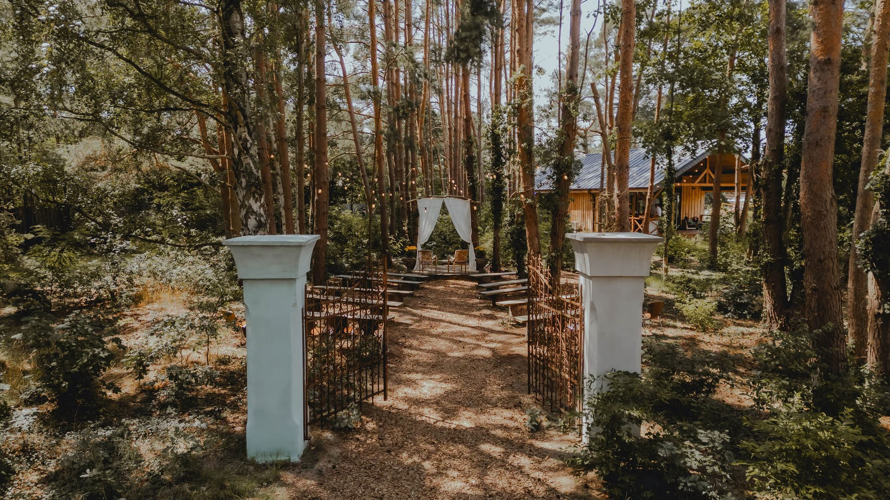

Jannas und Bens Hochzeit
Bis zur Hochzeit
Was bisher geschah…

Der Plan
Wir planen, nur einmal zu heiraten, also dachten wir, warum nicht daraus ein Ereignis machen – besonders da viele von euch eine weite Strecke auf sich nehmen. Deshalb haben wir uns für den eher trendigen Ansatz eines „Woliday” entschieden – eine Hochzeit über mehrere Tage, die uns ermöglicht, mehr Zeit mit euch allen zu verbringen. Der Veranstaltungsort ist ein wunderschönes Grundstück mit Unterkunft und viel Platz im Freien, und wir freuen uns auf ein paar entspannte Tage voller Essen, Spiele und Feiern. Ihr könnt ab mittags am 7. Juli ankommen und bis zum frühen Nachmittag des 9. Juli bleiben, wobei das Hauptereignis selbst am 8. stattfindet.
Natürlich wissen wir, dass nicht alle die gesamte Zeit dabei sein können. Wenn ihr nur für einen Teil kommen könnt – z.B. das Abendessen am Vorabend oder nur für die Zeremonie – ist das absolut fein! Es gibt keinen Druck, und ihr seid herzlich willkommen, so viel oder so wenig mitzumachen, wie ihr möchtet!
Der Tag davor
-
Ab 13:00
Ankunft
Ankunft am Farmhouse Wandlitz, Zelt aufstellen oder Zimmer beziehen.
-
14:00–18:00
Entspannter Nachmittag
Spiele, Relaxenn & Kennenlernen.
-
19:00
Abendessen
Ein gemeinsames, selbstgekochtes Abendessen und irgendwann der Schönheitsschlaf.
Der Hochzeitstag
-
10:00 - 11:30
Brunch
Ein entspannter Brunch als Stärkung für den Tag.
-
14:30 - 15:00
Ankunft
Für diejenigen, die nicht eh schon da sind.
-
15:00 - 15:45
Trauungszeremonie
Seid dabei, wenn wir uns das Ja-Wort geben.
-
15:45 - 18:00
Empfang
Nachmittagskaffee und Kuchen, gefolgt von Spielen und freier Zeit.
-
18:00 - 20:00
Abendessen
Das Hochzeitsessen, hoffentlich draußen als entspanntes Buffet.
-
20:00 - 20:30
Ceilidh
Ein fröhlicher Folk-Tanz zum Mitmachen.
-
20:30 - Bis in die Nacht
Party
Tanzen, tanzen, tanzen
Der Tag danach
-
10:00–12:00
Brunch
Ein gemütlicher Morgenbrunch; beginnt je nach Schlafbedarf.
-
Später Vormittag
Spaziergang & Erholung
Macht gerne einen Spaziergang oder entspannt einfach.
-
Bis 14:00
Abschied
Gute Heimreise – danke, dass ihr mit uns gefeiert habt!
Der Veranstaltungsort
Unsere Hochzeit findet im wunderschönen Farmhouse Wandlitz direkt vor den Toren Berlins statt. Unten findet ihr eine Karte, die euch zum Veranstaltungsort führt. Wer mit den öffentlichen Verkehrsmitteln aus Berlin anreist: Der Bahnhof Basdorf ist die nächstgelegene Haltestelle, von dort sind es 8 Minuten Fußweg zum Veranstaltungsort.

Unterkunft
Wie erwähnt gibt es verschiedene Unterkunftsmöglichkeiten direkt am Veranstaltungsort sowie im nahe gelegenen Ort, die unten beschrieben sind. Da die Bettenzahl am Veranstaltungsort begrenzt ist, haben wir im RSVP die Möglichkeit eingebaut, eure Präferenz anzugeben, und wir werden unser Bestes tun, um die bevorzugte Option für alle zu ermöglichen. Wenn ihr Fragen zur Unterkunft habt oder Hilfe bei der Suche benötigt, zögert nicht, uns zu kontaktieren.
Camping
Stellt euer eigenes Zelt auf einem ruhigen Platz im hinteren Teil des Geländes auf. Es stehen mehrere Badezimmer in der Nähe zur Verfügung. 10 Euro pro Person
Glamping
Es stehen zwei Jurten mit jeweils zwei Einzelbetten sowie ein Wohnwagen für zwei Personen zur Verfügung. 80 Euro pro „Zimmer" pro Nacht
Zimmer vor Ort
Es gibt: 6 Doppelzimmer und 5 Zweibettzimmer, verteilt auf zwei Gebäude. 120 Euro pro Zimmer pro Nacht
Hotels in der Nähe
Es gibt mehrere Hotels im nahe gelegenen Wandlitz und Basdorf, z.B. das Hotel Barnimer Hof, das 1 km zu Fuß entfernt liegt. Ca. 120 Euro pro Doppelzimmer pro Nacht
Was anziehen und mitbringen?
Mitbringen: Alles, was euch gefällt! Musikinstrumente, Spiele, Bücher – was auch immer euch (und anderen) Freude bereitet. Das Gelände verfügt über einen Whirlpool und eine Sauna, also vergesst eure Badesachen nicht. Es gibt auch einen Beachvolleyball-Platz und eine Tischtennisplatte – wer also einen Glücksschläger oder ein Lieblingsshirt hat, bringt sie gerne mit. Das Berliner Juliwetter kann etwas unberechenbar sein, also lohnt es sich, vor dem Einpacken die Vorhersage zu prüfen und sich entsprechend vorzubereiten – inklusive Sonnencreme, Regenjacke … oder beidem.
Anziehen: Alles, was euch gefällt! Tragt etwas, in dem ihr euch fantastisch fühlt und in dem ihr gut tanzen könnt.
Ab auf die Tanzfläche
Fügt eure Lieblingssongs zur Playlist hinzu hier hinzu
RSVP
Bitte meldet euch bis zum 31. März an, um die Planung zu vereinfachen. Wir hoffen, dass ihr dabei sein könnt!